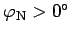
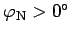
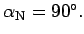
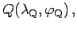
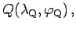

Inhalt Index DeskTop Bronstein

 Geometrie Sphärische Trigonometrie Berechnung sphärischer Dreiecke Orthodrome
Geometrie Sphärische Trigonometrie Berechnung sphärischer Dreiecke Orthodrome


Bewegungen auf Orthodromen - die Meridiane und der Äquator ausgenommen - sind mit der Notwendigkeit einer ständigen Kursänderung verbunden. Solche Orthodromen mit ortsabhängigen Kurswinkeln  können eindeutig unter Zuhilfenahme ihres nordpolnächsten Punktes
können eindeutig unter Zuhilfenahme ihres nordpolnächsten Punktes  beschrieben werden, wobei  ist.
beschrieben werden, wobei  ist.
Im nordpolnächsten Punkt hat die Orthodrome den Kurswinkel  Die Gleichung der Orthodrome durch  und den laufenden Punkt  dessen relative Lage zu
und den laufenden Punkt  dessen relative Lage zu  beliebig ist, ergibt sich nach der NEPERschen Regel gemäß als:
beliebig ist, ergibt sich nach der NEPERschen Regel gemäß als: